テーマ
取り組んできた成果物（卒業進級制作、または個人制作）の最終調整を進める。そのうえで、1・2限の学生の提案をもとに、希望するチームは、Renderの無料のインスタンス（Free instance）で、作品を公開してみる（任意）。無料のインスタンスの制限と、公開すると誰でもアクセスできることを先に確認し、公開前に、秘密の情報を載せていないか点検する
キーワード
最終調整 / Render / Web Service / Free instance の制限 / 公開前の4つの点検 / Git Provider と Public Git Repository
必要な準備
進級制作（または個人制作）のGitHubリポジトリを開けること。Renderを試すチームは、サーバー（Node）で動く作品があるとよい。クレジットカードの登録を求められたら、先に進まず先生へ。
この回のゴール
- 前回の先輩の話を、自分の作品の最終調整に使える
- GitHub PagesとRenderの違いと、Renderの無料のインスタンス（Free instance）の制限を、1文で言える
- 公開する前に、4つの点検（公開してよいか・秘密・個人情報・Free）をできる
- （任意）作品をRenderで公開し、動いたか・動かない原因を記録できる
この回の手順は、1・2限の学生が、画面つきで教えてくれた内容がもとです。画面のオレンジの枠・矢印・文字は、その学生の手書きの注釈を、清書したものです（名前は載せていません）。Renderの画面は変わりやすいので、自分の画面と見比べながら進めます。
授業の流れ
2コマ連続（90分 + 90分 = 計180分）。途中休憩あり。
1限 前半
約40分
前回を振り返り、Renderを知る
今日の流れ：知る → 試す → 残す
① 前回の振り返りと、今日の目標（約5分）
- 前回の先輩の話で、自分の作品に使えそうなことを、一言で言う（前回のメモを見てよい）
- 今日は、最終調整を進める。希望するチームは、Renderで公開してみる（任意）
② Renderとは、なぜ必要か（約10分）
GitHub Pages と Render の違い
- GitHub Pagesは、HTML・CSS・JavaScriptの静的なファイルを見せる公開（GitHub Docs）。サーバー側のプログラム（NodeやWebSocketのサーバー）は、Pagesの上では動かせない
- Renderは、サーバーも動かして公開できるサービス（Web Service）。公式のFreeの説明にも、WebSocketが出てくる（止まる条件・再起動の条件）。公開すると、
onrender.comのURLができる - 「作品がサーバーを必要とするか」を、チームで確かめる。必要でないなら、無理に使わなくてよい
③ 無料プランの制限（約10分）
無料のインスタンス（Free）の4つの制限
- 公式の説明: 「Render spins down a Free web service that goes 15 minutes without receiving any inbound traffic.」（15分アクセスがないと止まる）、再び開くと「about one minute」かかる。Renderの画面にも「Your free instance will spin down with inactivity, which can delay requests by 50 seconds or more.」と出る（手順 13の画面）
- 「Do not use them for production applications.」（本番用途には使わないでください）。だから、最終審査の本番は、いつもの方法で動かせる準備をしておく。Renderは、予備や、試しの公開として使う
- 数字や条件は、変わることがあります（確認日 2026-11-26）。無料のインスタンスを作るのに、クレジットカードが要るとは、公式に書かれていません（最初のデプロイの説明に「No payment is required」とある）。実際に求められるかは、画面で確かめます
④ 公開前の点検（約10分）
公開前の4つの点検
- 公開すると、URLを知る人は誰でも開けます。公開してよいか、チームで確認する
- 登録の前に、Renderの利用規約とプライバシーポリシー（2026-07-10更新）を読む。16歳未満は使えない（利用規約）。本校の学生は全員18歳以上なので、この年齢の条項には当てはまりません。規約には、サーバー上のデータは、Renderの判断で、いつでも消されたり変えられたりすることがある（責任は負わない）という条項もある。大事なデータの置き場所には、しません
- APIキーなどの秘密は、コードに書かず、環境変数（Renderの画面の「Environment Variables」）に入れる。画面にも「secrets (such as API keys)」を入れる欄、とある
- Renderに渡すときは、チームの了解を取る。非公開のリポジトリは、Public Git Repository（公開リポジトリ向けの方法）では使えないと考えられます（公式の説明から）（Git Provider なら連携できるが、先生と確認する）。非公開のものを、このために公開に変えません（それまでの履歴も、公開されてしまう）
⑤ 進め方を選ぶ（約5分）
- Renderチーム: 作品がサーバーを必要とし、公開して試したい。1限後半から、下の手順で進める
- 最終調整チーム: Renderは使わない。最終審査に向けた最終調整を、1限後半から続ける
1限 後半
約50分
ワーク①：Renderにつなぐ（最終調整チームは最終調整）
Renderチーム（約50分）
- ① サインインから Connect まで（約20分）: 下の画像の手順 1〜9 を、自分の画面と見比べながら進める。自分たちのリポジトリは、手順6で Git Provider（GitHub連携）を選ぶのが、公式の案内。画像の手順 7〜9（URLを貼る方法）は、公開リポジトリだけ。連携は、公式では、Account Settings の Account Security で、Git Deployment Credentials に GitHub を追加する（画面は確認できていないので、先生と一緒に進める）。非公開のリポジトリも選べる（公式）
- ② 設定（約20分）: 手順 10〜12。特に、Compute は Free（学生の画面では、初めは $7/月）
- ③ Deploy と確認（約10分）: Deploy web service を押す（手順 12）。手順 13 の画面のログを見て、終わったら出るURLを開く
- 先生が席をまわって、画面と選択（特に Compute）を確認します
手順の画像は、学生の画面です。黒い四角は、アカウントやリポジトリの名前を隠した部分です。
ソースの渡し方：2通り
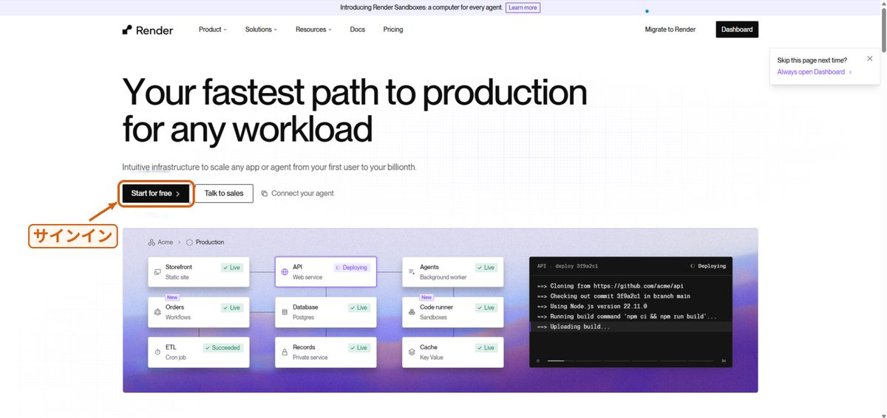
トップページの Start for free を押す（注釈: 「サインイン」）
（画像を押すと、大きく開きます）
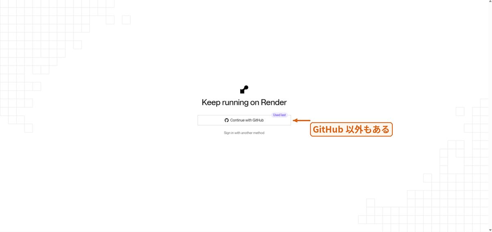
GitHub以外の方法もある（注釈）。画面の「Sign in with another method」から選ぶ。登録画面には、メール・GitHub・Google・GitLab・Bitbucket などが並ぶ（2026-11-26に画面で確認）
（画像を押すと、大きく開きます）
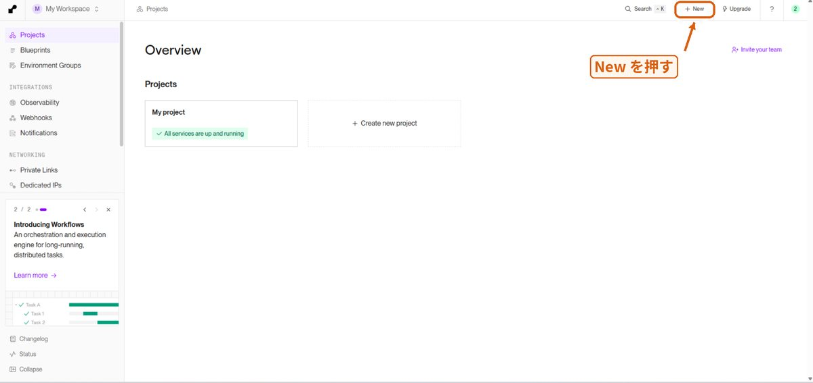
ダッシュボード右上の New を押す
（画像を押すと、大きく開きます）
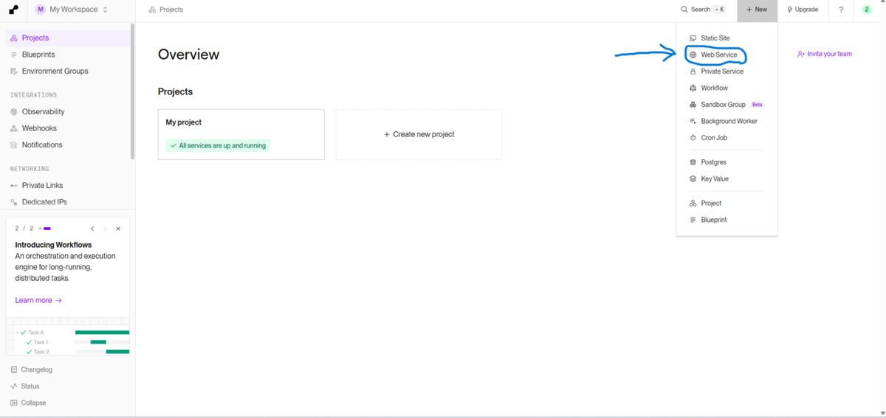
メニューから Web Service を選ぶ
（画像を押すと、大きく開きます）
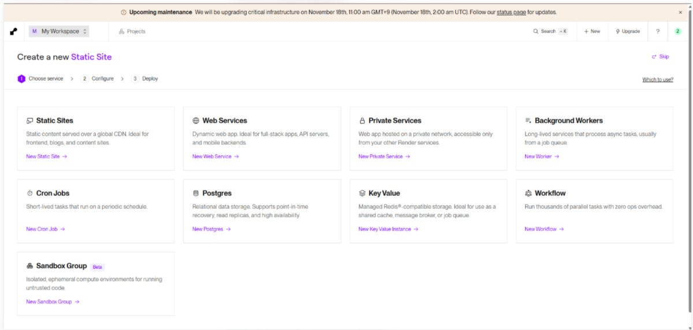
この画面が出ることもある。Web Services のカードの「New Web Service」を押す。以降は同じ（学生のメモ。学生の画面で見た表示で、公式では確認していない）
（画像を押すと、大きく開きます）
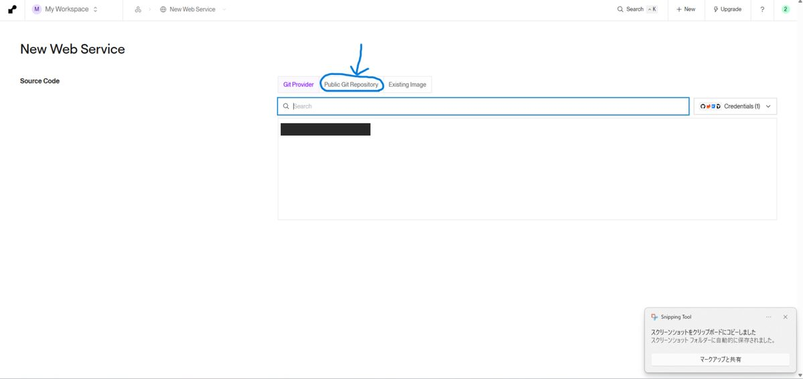
上のタブは3つ（Git Provider・Public Git Repository・Existing Image）。この授業で使うのは、次の2通り（Existing Image は使わない）。Git Provider（GitHub連携）は、自分たちのリポジトリには、公式が案内している方法で、一覧から選ぶ。Public Git Repository は「自分が属していない公開リポジトリ」向け（公式）で、学生の手順はこちら。以降の手順 7〜9 は、この方法。画像の黒い四角は、リポジトリ名を隠した部分
（画像を押すと、大きく開きます）
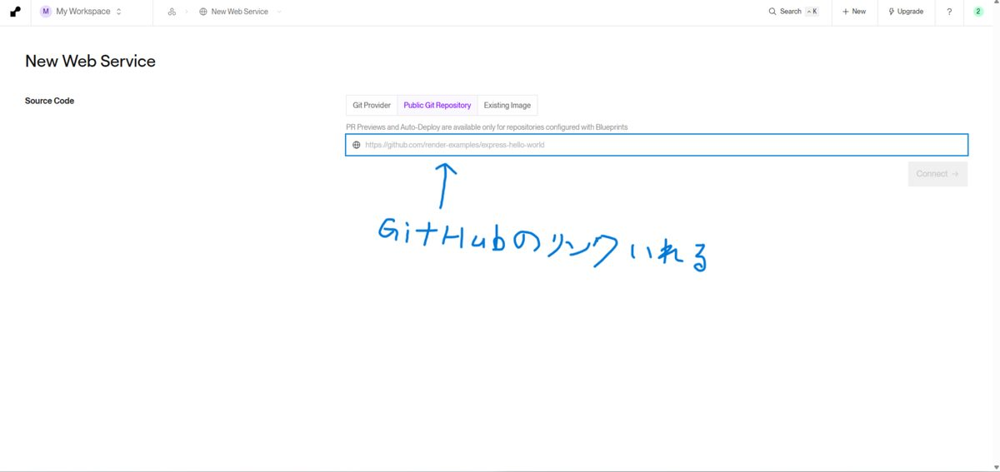
欄に、GitHubのリポジトリのURLを入れる（注釈: 「GitHub のリンクを入れる」）
（画像を押すと、大きく開きます）
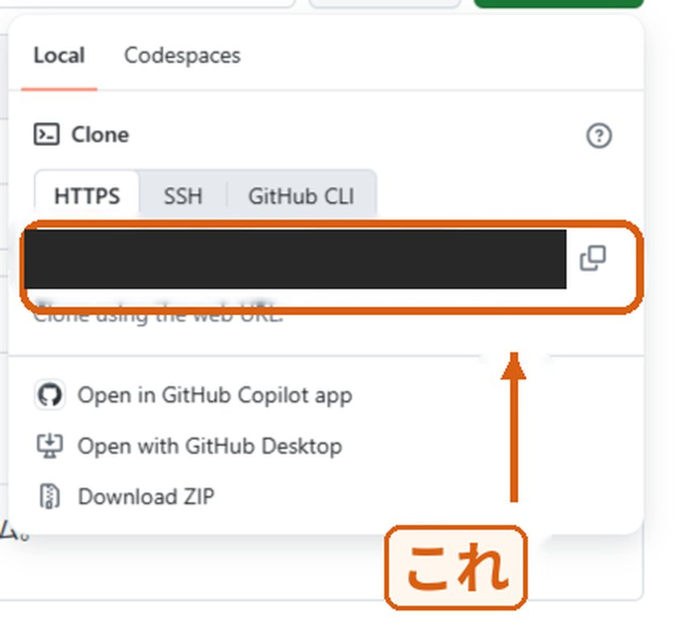
GitHubで Code → HTTPS のURLをコピーする（注釈: 「これ」）。名前は隠してある
（画像を押すと、大きく開きます）
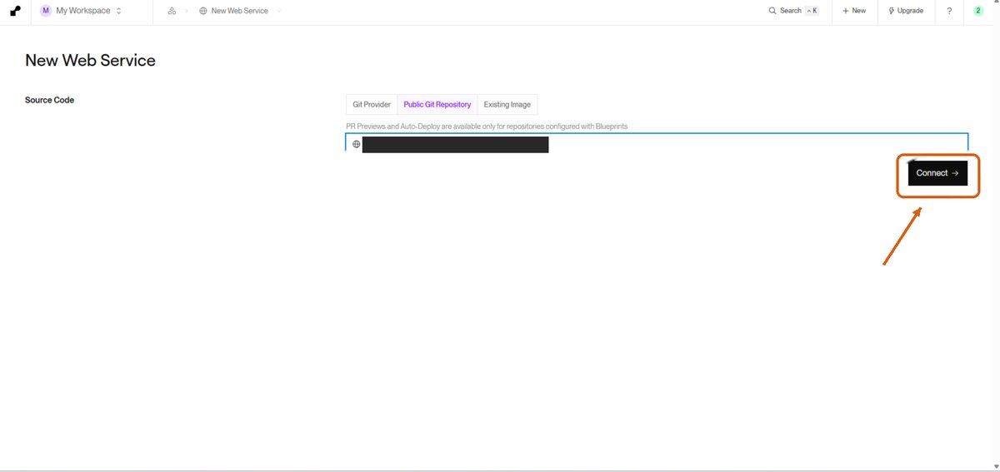
Connect を押す。画面には「PR Previews and Auto-Deploy are available only for repositories configured with Blueprints」とある。この方法は手動デプロイのみ（公式）
（画像を押すと、大きく開きます）
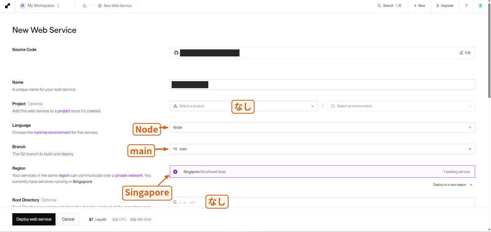
Name、Project=なし、Language=Node、Branch=main、Region=Singapore（学生の画面。選べるのは Oregon・Ohio・Virginia・Frankfurt・Singapore。作成後は変えられないと公式にある）、Root Directory=なし。Regionは自分の画面で確認する
（画像を押すと、大きく開きます）
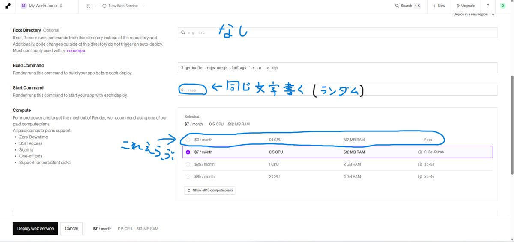
Compute は、$0 / month の Free を選ぶ（学生の画面では、初めは $7 / month が選ばれていた）。Build Command・Start Command の欄には、Go用の例（
go build …／./app。入力例とみられる）が入っている。Nodeの作品なら、自分の作品に合わせて書く（公式の例: npm install／npm start）。学生のメモの意味は確認中（未確認）（画像を押すと、大きく開きます）
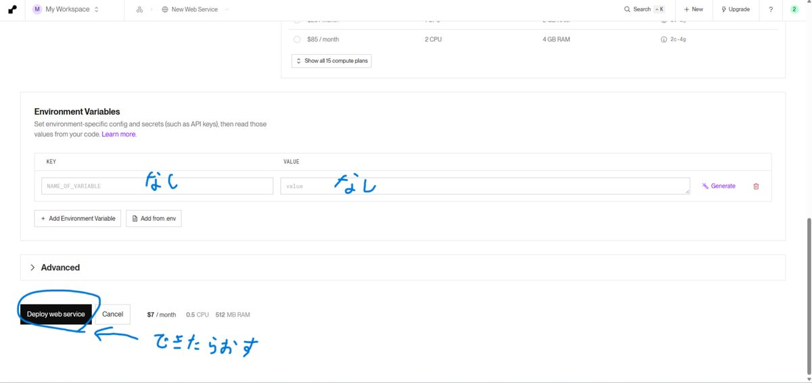
Environment Variables は、なければ空欄でよい（学生のメモ）。APIキーなどがあれば、コードではなくここに入れる（公式: 環境変数は、サービスの Environment の画面で設定する。ローカルで
.env を使っている作品は、.env を Git に上げず、この画面で設定する。画面には、.env から取り込む機能もある）。Deploy web service を押す（注釈: 「できたら押す」）。下の金額が $7 のままなら、押さずに戻る（画像を押すと、大きく開きます）
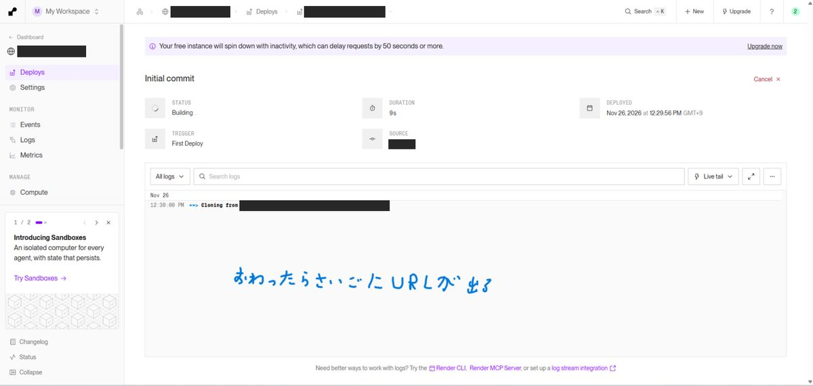
Deploy を押すと、この画面になる。Statusが Building の間は、ログを見て待つ（注釈: 「終わったら、最後にURLが出る」）。上の帯には「Your free instance will spin down with inactivity, which can delay requests by 50 seconds or more.」とある（無料のインスタンスは、使われないと止まり、再開に50秒以上かかることがある）
（画像を押すと、大きく開きます）
止まる合図: ①クレジットカードの登録やUpgradeを求められた ②金額が $7/月 のまま ③支払い方法が、すでに登録されている（Billing の画面で確認。登録済みだと、帯域・ビルド時間の超過分が請求されることがある。未登録だと、請求ではなく止まる。公式） ④公開してよいか迷う。この4つは、先に進まず、先生を呼びます。
最終調整チーム（約50分）
- 前回のメモを見ながら、最終審査までにやることを進める。AIエージェントを使うときは、小さく頼み、出てきたものは人が確かめる（第10回）
休憩
10分
2限 前半
約50分
ワーク②：公開して確かめる（最終調整チームは最終調整）
Renderチーム（約50分）
- ① ログとURLを確認（約15分）: 失敗したときは、ログの最後の文を読む。AIエージェントに聞くときは、関係するエラーの数行だけを貼る。貼る前に、APIキー・パスワード・URLに含まれる秘密・個人情報が入っていないか目で確かめ、あれば消す。迷ったら先生へ。直したら、人が確かめる
- ② 別の画面で開く（約10分）: スマホや、隣の人のPCで、公開URLを開いてもらう（URLは、チームの外へ広げない）。マルチプレイなど WebSocket を使う作品は、2台で、1つの操作を実際に行って確かめる（画面が開くだけでは足りない）。接続先が
localhostのままだと動かない。公開では wss:// を使うよう、公式が書いている（公式: 「Always use the wss protocol for WebSocket connections over the public internet.」） - ③ 15分あけて、もう一度開く（約25分）: 全部の端末で、公開ページを閉じてから、15分ほど待つ（開いたままだと、通信が続いて止まらないことがある（公式: 止まる条件の15分には、HTTPリクエストと、既存の接続のWebSocketメッセージも数えられる）。待つ間は、最終調整）。もう一度開いて、再び動くまでの時間をはかる（公式: 約1分）
つまずきやすい点（公式で確認できたもの。確認日 2026-11-26）
- ポート: サーバーは、
PORTという環境変数のポートで、0.0.0.0に待ち受ける必要がある（既定は10000）。作品のコードが別のポートに固定されていないか、確認する - Nodeのバージョン: 指定しないと、2026-10-21以降に作ったサービスでは、24.22.1が使われる（公式）。ローカルと違うと動かないことがあるので、
NODE_VERSIONか.node-versionかpackage.jsonのenginesで指定する。範囲で指定するときは、上限を付ける（公式） - 失敗したとき: まずログを見る（Deploys のページ）。ビルドや起動が失敗しても、前に成功した版は動き続ける（公式）。起動の失敗でよくあるのは「Port scan timeout reached」で、
0.0.0.0とPORTを確認する - ファイルの保存: 無料のWeb Serviceでは、ファイルは、再デプロイ・再起動・停止で消えます。ゲームの記録などをファイルに書く作りは、消えるものとして扱う
- 更新のしかた: Public Git Repositoryで作ったサービスは、自動デプロイが使えず、手動で更新します（公式）。コードを直したら、手動で Deploy を押す。Git Provider（GitHub連携）で作ると、既定では、pushで自動デプロイ（公式。切ることもできる）。連携のしかたは、1限後半の手順 6 のところを見る
最終調整チーム（約50分）: 最終審査までにやることを続ける。
2限 後半
約30分
結果を残す
- 結果のメモ（約10分）: 動いたか、動かなかったか。動かなかったなら、原因（ログの文、ポート、コマンド、など）と、次にやること。個人情報・パスワードは書かない
- 共有（約10分）: 動いたチームは、つまずいたところと、直し方を、近くのチームに伝える（公開URLは、チームの外へ広げない）。最終調整チームは、進んだことを共有する
- コミット・プッシュ（約10分）: 進んだ分をコミットして、プッシュする。やり方が分からない人や、チームでGitの共有に困っている人は、先生へ
動かなくても大丈夫。公開は、試すことが目的です。原因のメモが、そのまま次回の出発点になります。
まとめ
約10分
今日の結果を振り返り、次回を知る
今日の一言メモ（3つ）
- 先生のひとこと（約3分）: 今日の公開の結果を、最終審査にどうつなげるか
- 一言メモ（約4分）: 公開は動いた・動かなかったと理由、つまずいたところ、最終審査までにやることを、一言ずつ
- 次回（第13回、約1分）：発表準備——発表用の資料・メモ作りに着手（授業計画一覧）。最終審査の日程に合わせて、内容を調整することがあります
- メモが残っているか、最後に確かめて退出（約2分）
課題・次回までにやること
必須
今日の結果（公開は動いた・動かなかったと理由、最終審査までにやること）を、メモに残す
次の回の最初に開きます。個人情報とパスワードは書かない。
推奨
Renderを試した人は、料金が発生していないか、ダッシュボードで確かめる
Computeが Free のままか、Upgrade や支払い方法の登録をしていないかを確認する。分からなければ、次回、先生へ。
参考リンク
すべて公式のページです（確認日 2026-11-26）。内容と画面は、変わることがあります。
- Deploy for Free（Render Docs） — 無料のWeb Serviceの制限
- Pricing（Render） — ワークスペースのプラン（Hobby）と、Compute（Free・$7/月）
- Web Services（Render Docs） — Build Command・Start Command・Public Git Repository・ポート
- Deploying on Render（Render Docs） — 自動デプロイと手動デプロイ
- WebSockets on Render（Render Docs）
- About GitHub Pages（GitHub Docs） — 静的なサイトのホスティング
- 第11回 先輩に聞く：卒業進級制作の最終審査に向けて（本サイト）
- 第10回 進級制作に小さな改善を加える①（本サイト） — 小さく頼み、人が確かめる